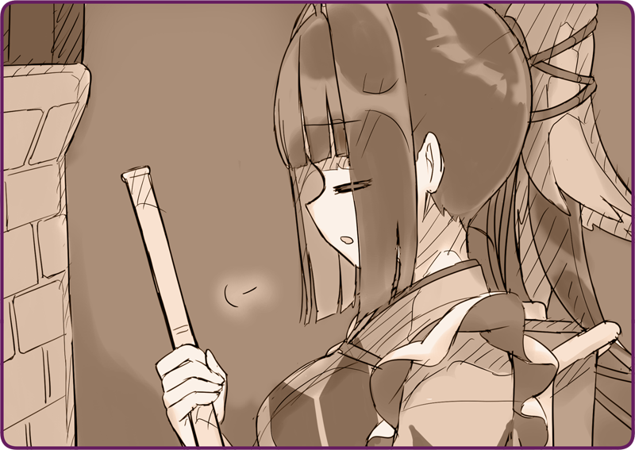

プリマドール・アンコール
06-02 雪華文様(2)
＜＜前のエピソード
目次
次のエピソード＞＞

「……はぁ」
「……はぁ」
今日何度目のため息だろうか。
ほうきを片手に、すっかり年季の入った木の床材を掃いている。大陸では室内でも靴を脱がない。東邦人の誰もが最初は面食らう風習だ。それはきっとこの寒さのせいなのだろうけれど、掃除婦の手間まで考えてほしいものだ。
「どうしてあたしがこんなことを……」
「どうしてあたしがこんなことを……」
自分の格好を見やる。髪色に合わせて新調したであろう濃紺の着物。糊の利いた純白の前掛け。かつて袖を通していた軍服とは似ても似つかない。
窓の外には雪景色。遠くには遥かな水平線が望む。ここはかつて鴉羽がいたアルタリア西南部戦線より北へ百数十キロ。ヘレナ諸島と呼ばれる海沿いの小島だ。軍が空き家を借り上げて、保養所としているらしい。
ナギ「いま帰ったよ」
軽快にドアが開くと、その人は涼しげな顔を見せた。
ナギ「ただいま、鴉羽」
「お、お帰りなさいませ……」
「お、お帰りなさいませ……」
呼ばれ方にまだ違和感がある。いや、違和感しかない。
しかし、あたしは
自律人形
オートマタ
だ。
内心どんなに不平不満があろうとも、命令には服従しなければいけない。
「……マスター」
「……マスター」
だから、そう呼んだ。
マスターとは人形の所有者のことだ。同時に、命令権を有するただ一人の人間でもある。自律人形はマスターの意に沿い、その命令を実行するのが役目だ……たとえ、それがどんな危険を伴うものであっても。
人形とはそういうものだ。
ナギ「ナギさん、でいいよ」
「は？」
「は？」
ナギ「あまり好きじゃないんだよね、その呼び方」
「そういうわけにはいきません。これは国際人形憲章で決まっていることです」
「そういうわけにはいきません。これは国際人形憲章で決まっていることです」
ナギ「なんだか堅苦しくてさ」
「……それは、呼ぶなという命令ですか？」
「……それは、呼ぶなという命令ですか？」
ナギ「まさか」
なんとも捕らえどころがない。肩をすくめると、コートを脱いでハンガーに掛けようとした。
「マスター、お手伝いしま……なぁあああ！？」
「マスター、お手伝いしま……なぁあああ！？」
追いかけようとして、はたと気がついた。
「靴、泥だらけじゃないですか！？」
「靴、泥だらけじゃないですか！？」
掃除したばかりの床に、転々と黒い足跡が続いている。
ナギ「今日はあったかいからね、雪がすこし溶けてきているんだよ。鴉羽も外出してきたらどうだい？」
「いま掃除したばっかりなんですけど？」
「いま掃除したばっかりなんですけど？」
ナギ「ああ、それはすまないね。確かこっちのほうにブラシがあったと思うんだけど……」
「その靴で歩き回らないでください！」
「その靴で歩き回らないでください！」
ナギ「無いな……寝室かな？」
「ですから、カーペットの部屋に行くのはやめてください！！！」
「ですから、カーペットの部屋に行くのはやめてください！！！」
＊ ＊ ＊
「……はぁ」
「……はぁ」
もう何度目かも分からないため息をつく。
庭先にベンチを出して、あたしはブーツの汚れを落としていた。しっかりブラシをかけて、端切れ布で湿気を拭き取っていく。後で立てかけて乾かしておかなければいけない。
ナギ「うまいじゃないか」
気がつくと、隣にマスターが立っていた。
「……どうも」
「……どうも」
ナギ「ひとつどうだい？」
「これは？」
「これは？」
小さな革包みを解くと、そこには小さな赤い実が詰まっていた。
ナギ「ローズヒップさ。農家の人から買い取ったんだ。こいつは雪の中でも実を付けるらしいよ。ハーブティーにしてもいいし、そのまま食べてもおいしいらしいよ」
「あたしは人形なので、固形物を食べる必要はありません」
「あたしは人形なので、固形物を食べる必要はありません」
ナギ「油分も豊富だし、すこしなら大丈夫さ」
「遠慮します」
「遠慮します」
ナギ「残念だなぁ。お肌にもいいらしいんだけどね……お、意外といける」
一人赤い実を頬張っては、もぐもぐと口元を動かしている。
「マスター。聞いてもよろしいですか？」
「マスター。聞いてもよろしいですか？」
ナギ「なんだい」
「どうしてあたしの役目が、身の回りのお世話をすることなのですか？」
「どうしてあたしの役目が、身の回りのお世話をすることなのですか？」
ナギ「いい気分転換になるだろ？」
「お言葉ですが、あたしの本来の役目は戦闘人形です。歩兵に随伴し、
機械人形
メカニカ
を駆って皇国に偉大な勝利を――！」
「お言葉ですが、あたしの本来の役目は戦闘人形です。歩兵に随伴し、
機械人形
メカニカ
を駆って皇国に偉大な勝利を――！」
ナギ「もたらす前に、木っ端微塵に壊れちゃったわけだけど」
「それは……」
「それは……」
ナギ「だから、ボクに修理のおはちが回ってきたわけだ」
「直してくれたことには感謝しています」
「直してくれたことには感謝しています」
ナギ「いいや、まだ全部は直っていないさ」
「あたしはすっかり……」
「あたしはすっかり……」
ナギ「だいぶ、無理をしたらしいね」
「それは……」
「それは……」
ナギ「カザの戦いはもともと無理がありすぎたんだ。機械人形１２００体に対して、 自律人形はたったの１人。しかもろくに人形師もいなかったんだろう？」
「しかし、命令でしたので。あたしは役目を果たしました……カザ要塞攻略を１８日間遅延させ、その間に……」
「しかし、命令でしたので。あたしは役目を果たしました……カザ要塞攻略を１８日間遅延させ、その間に……」
ナギ「キミは……キミたちはよくやったよ」
「あたしを戦線に復帰させてください」
「あたしを戦線に復帰させてください」
ナギ「ダメだ」
「どうしてですか？」
「どうしてですか？」
ナギ「壊れているからさ」
ナギは慈しむように、そっとこめかみを撫でた。細く長い指だった。
「論理機関はそんなところに入っていません……」
「論理機関はそんなところに入っていません……」
ナギ「キミを直すにはまだ時間がかかる。別に家事で奉仕をして欲しいわけじゃない。ボクはただ、少し休んで欲しいんだ。ボクと同じようにね」
「同じ……？」
「同じ……？」
ナギ「休暇中なのさ。でも、のんびりしているのは性に合わないからね」
「……だから、あたしを直したんですか？」
「……だから、あたしを直したんですか？」
ナギ「そういうことさ、でないと軍の倉庫に眠ったままだったからね」
それは、手慰みに直したということだろか。
放っておくと、そのままスクラップとして眠り続けていたのかもしれない。相当状態が悪かったのだろう。
ナギ「しばらく好きなことをするといいさ」
ローズヒップの詰まった革包みをそっと握らせると、ナギは立ち去った。
「そんなこと、言われても……」
「そんなこと、言われても……」
＜＜前のエピソード
次のエピソード＞＞
執筆：丘野塔也 挿絵：まろやか ＣＶ：楠木ともり（鴉羽）
目次へ戻る
©VISUAL ARTS / Key
Bản dịch tiếng Việt thực hiện bởi Vietnam Key FanClub